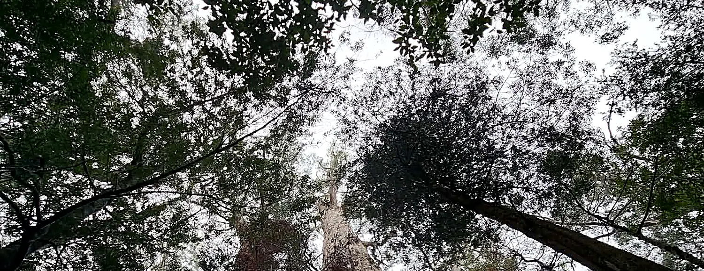

Home › About
About
I climbed for seven years before I wrote a word about it
That is the whole of my pitch. Plenty of people can quote a standard back to you. Fewer have stood in the tree, or watched an excavator find a root plate, and know what actually happens next.
How I got here
Seven years of practical arboricultural work, climbing and on the ground, across residential, municipal and development sites. Then the Diploma, then consulting.
The order matters. A report written by somebody who has only ever written reports tends to specify things that cannot be done, or misses the thing that will obviously go wrong on the second day of excavation. I try to write the other kind.
What I actually do
Consulting only. I do not prune, remove or climb commercially, and I do not have a works arm. When I tell a council that a tree can be retained, or that it cannot, there is no job sitting behind that conclusion.
That independence is the product. It is also why my professional indemnity policy covers consulting and expressly excludes physical tree works: the insurer and I agree on what this business is.
How I work
- Fixed fee, quoted in writing before anything starts
- Residential inspections typically completed within five business days
- Reports written to AS 4970:2025 and AS 4373, in current terminology, with the equivalence to older council checklists spelled out
- If council comes back with a question about my report, answering it is part of the job
- If you do not need a report, I will tell you that and there is no fee

Credentials
- Qualification
- AQF Level 5 Diploma of Arboriculture
- Risk
- ISA Tree Risk Assessment Qualification
- Experience
- 7+ years practical arboriculture
- Insurance
- Professional indemnity, $2,000,000. Certificate of currency on request
- ABN
- 42 600 362 402
- Based
- Clifton Hill, working across metropolitan Melbourne
Work
The kind of jobs that come in
Described by the problem rather than the address. Client sites stay private, which is the same courtesy I would extend to yours.
Canopy tree assessment and removal justification
A canopy tree caught by the new provision on a residential site. The work was establishing whether it met all three limbs of the test, whether it was a boundary canopy tree, and then building the removal case against the five decision guidelines the council is actually allowed to consider.
Retaining wall replacement beside a mature pin oak
A failing retaining wall inside the root zone of a mature pin oak. The question was not whether the wall had to go, it was how much root loss the tree would carry and whether the replacement could be built without taking the tree past the point of recovery. Encroachment quantified, methodology specified, tree retained.
Tree roots and sewer infrastructure
A blocked sewer with a tree nearby and an assumption already formed about which tree was responsible. Investigation established what the roots were actually doing, which matters because removing the wrong tree costs the owner the tree and leaves the blockage.
Arboricultural supervision during service installation
Services routed through a protection zone on a live site. Attendance at the excavation, decisions made on encountered roots at the time rather than afterwards, and each one recorded so the permit condition could be closed out without argument.
TPMP preparation and construction monitoring
A tree protection management plan written to be enforceable, then monitored across the build. The plan is the easy half. The monitoring is what makes it real.
Inspections, risk assessments and audits across ten councils
Work in Yarra, Boroondara, Whitehorse, Banyule, Stonnington, Darebin, Merri-bek, Brimbank, Monash and Moonee Valley. Different local laws, different measurement heights, different tolerance for a thin report.
Also
I build the software I use
Alongside the consulting I build TIMBR Field, a mobile assessment tool for arboricultural consultancies. Every tree captured the same way, zones calculated to AS 4970:2025 on site, photographs attached to the right tree.
It exists because I got tired of reconstructing site notes at a desk three days later, which is where most of the errors in this industry actually come from. It also means the figures in your report were worked out while I was standing at the tree.
Send me the plans and I will send you a number.
Fixed fee, quoted in writing within one business day. If you are not sure what you need yet, the address and a sentence about what you are trying to do is enough to start with.